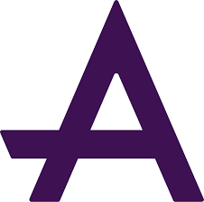
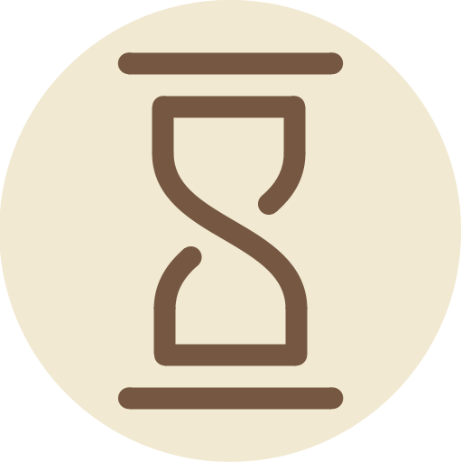

Hi, I'm Joseph Coppin
Software Engineer • 3rd-Year Computer Science BSc at the University of Warwick
SKILLS
- Web Development: TypeScript, Svelte(Kit), React.js, HTML / CSS / JS, Tailwind
- Systems Development: Rust, C, C++, x86 Assembly, LLVM
- Databases: MySQL, PostgreSQL
- Dev Ops: Linux, Docker, Bash, Git
- AWS: Lambda, DynamoDb
- Object-Oriented Programming, Interpreter/Compiler Construction, Agile Methodologies
- Other languages: Python, Ruby, Java, Go, C#
EXPERIENCE
Stripe
Software Engineer (Internship) • Jun-Sept 2025Ruby (Sorbet), Java, Online Payments, Data Processing
I worked in the Nordic Local Payment Methods team to integrate Mobilepay and Vipps with the Stripe product 'Sigma' for data analytics.
 AVEVA
Software Engineer (Internship) • Jun-Aug 2024C#, TypeScript, React.js, Storybook, Windows, Visual Studio, Microsoft Azure
In this 10-week paid summer internship, I rewrote a user-facing dashboard application 'DataLayer' from Razor to React and .NET backend.
Jumptech
Software Engineer (Internship) • Aug 2022 & Jul-Sep 2023TypeScript, GraphQl, AWS Lambda, AWS Cloudwatch, Storybook, AWS DynamoDB, Jest, Datadog, Angular, Jira, Jenkins, GitHub Actions
I was invited back to the Silicon-Fen startup JumpTech for a 6-week paid internship in 2023 in their agile software development team, after a week of work experience in 2022. I focused on the backend of their AWS-powered application suite, contributed to stability and reliability by fixing bugs, worked to improve code quality and wrote automated tests. I designed new reusable web components with Storybook and wrote a shared TypeScript utilities library, among other tasks. I was invited back in 2024 for another summer internship.
World Cubing Association
Software Engineer (Volunteer) • 2022-23JavaScript, React, Ruby on Rails
Volunteering on the open-source WCA website, I aided with the migration from Ruby on Rails to React, fixed bugs and contributed to architectural discussions. I learned how to be productive in a large, unfamiliar code base and worked effectively in the remote-first WCA Software Team, a distributed group of engineers from around the world.
translate Que Me Citen
Freelance Web Developer • 2023HTML, JS, CSS, UnoCSS, Gmail, Google Domains
Created the portfolio website for the Spanish translation service QueMeCiten.com. Communicated effectively to create, deploy and maintain the product.
PROJECTS
 Everywhen
SvelteKit, TypeScript, MySQL, Playwright, Tailwind, Vitest
Everywhen is a journaling and life-logging web-app project I founded in 2022. Key features include: custom auth, powerful insights, map of entries, cross-timezone handling, end-to-end encryption with custom encrypted indexing, and integrations with 3rd party APIs. See the linktree for more info. My 3rd year degree dissertation project is to improve and expand Everywhen.
Oxynium
Rust, Assembly, Oxynium, Bash, Docker
Oxynium is an open-source programming language I created from scratch Rust. It is a statically-typed, compiled language with a syntax similar to Rust and Go. Some of its features include a powerful type system, anonymous and first-class functions, classes, and operator overloading.
I had previously created Entropy Script an interpreted language with run-time type checking, written in TypeScript, and which inspired Oxynium.
kid_star Osmond House Points System
Vanilla HTML / JS / CSS
For my A Level computer science coursework I created an open-source house point management web-app which was used by students and teachers to organise and view the awarding of house points for one school year.
EDUCATION
Warwick University
Computer Science B.Sc. • 2023-26
Completed 2nd year of studying Computer Science at the University of Warwick with expected 2:1 (69%)
Social Secretary of the Warwick Badminton Club 2024-2025: organized weekly social events and the end-of-year ball for 50+ members;
UoW Table Tennis Club Team player 2024-2025;
UoW Climbing Club Competitions Team member 2025-2026.
King's School Ely
GCSEs and A Levels • 2018-23
Achieved A* A* A* A in Computer Science, Physics, Maths and Further Maths respectively for A Levels.
Achieved 9 9 9 9 9 9 9 9 8 8 8 in GCSEs.
At King's Ely, I was awarded a King's Scholarship in 6th Form, based on my GCSE scores. Awarded the STEM and Academic scholarships. Awarded the Pye Foundation Prize for Contribution to Computing in 2021 and 2022. Awarded the Computer Science subject prize in 2022 and 2023, and Academic Prize 2021.
Ran the Turing Club, a weekly club for students to learn about Computer Science, in 2021 and 2022, and managed the King's Ely GitHub page.
Achieved 57 points in the TCS Oxford Computing Challenge 2022: distinction and gold awards, best in school.
Participated in 2020-22 STEM-themed Erasmus Exchange; won best design award for a wind turbine.
Completed Duke of Edinburgh Bronze: learning Esperanto, volunteering at a chess club, volunteering at school photography club.
Created a realtime quiz app used in the annual school quiz competition. Repo
MORE ABOUT ME
Sport
I enjoy climbing, table tennis, badminton and tennis.Photography
You can find my wildlife photography on my Instagram @jcphotography776.Chess
In school competed in various chess competitions, including the Delancy National semi-finals three times and quarterfinals 5 times. I founded and ran a school chess club in 2017.Woodworking
Projects include: designing and building a 19x19 Go board, an engraved bedside table.OTHER PROJECTS
Mini-C Compiler
C++, LLVM
Implemented a modular compiler for the Mini-C language in C++ that features a recursive-descent LL(1) parser, comprehensive semantic analysis, and an LLVM IR code generation backend.(CS241) Multithreaded Network Intrusion Detection System
C, pthreads, libpcap
Developed a high-performance intrusion detection system in C that utilizes a thread-pool architecture to capture and analyze network traffic in real-time, detecting threats such as SYN flood attacks and ARP poisoning.(CS255) AI Game Playing Agent for Connect-N
Python
Developed a high-performance game-playing agent in Python using the Minimax algorithm with Alpha-Beta pruning and custom heuristics to solve a generalized Connect-4 strategy game.(CS258) Concert Management System
Java, PostgreSQL
Developed a comprehensive concert management system using Java and PostgreSQL, implementing a normalized database schema, ACID-compliant transactions for ticket sales, and complex SQL queries for financial analytics.(CS259) TPTP Language Parser & Interpreter
Java, JavaCC
Designed and implemented a parser and interpreter for a custom domain-specific language using Java and JavaCC, featuring Abstract Syntax Tree (AST) construction, static analysis for algorithmic simplicity, and a runtime execution engine with loop detection.(CS262) Propositional Logic Theorem Prover
Prolog
Implemented a resolution-based theorem prover in Prolog for propositional logic, featuring a custom formula parser and an automated conversion engine that transforms complex logical expressions into Conjunctive Normal Form (CNF) for validity verification.Family Tree
somethingA Level coursework
somethingSchool Quiz App
somethingGCSE coursework
somethingSchemion
somethingEntropy Hydrate
somethingSorting Algorithm Visualiser
somethingWordle
somethingDash
somethingPromptalizer
somethingEntropy Script
somethingEntropy Engine
somethingCircuits
somethingChaos
something